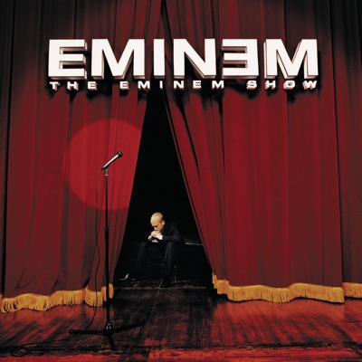
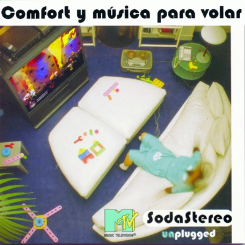

Imaginen esto
Última repetición. Vas por tu récord personal.
La canción te tiene justo donde necesitas estar.
Tu playlist está en aleatorio.
Entra la canción con la que te duermes.
Sueltas la barra para cambiarla.
Tu cuerpo
Ritmo cardíaco
Esfuerzo máximo
168BPM
En sincronía
Desincronizado
Tu música

Till I Collapse
Eminem
171BPM
Tu música

Té Para 3
Soda Stereo · Unplugged
116BPM